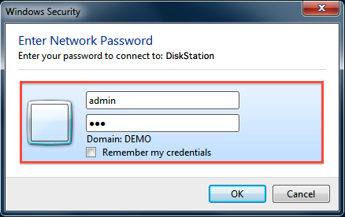

Overzicht
Synology NAS is ontworpen om eenvoudig en snel bestanden in een lokale netwerk te delen en op te slaan, zodat u direct toegang krijgt tot gedeelde mappen en bestanden op de Synology NAS, zonder dat u telkens weer moeite moet doen om in te loggen bij DSM. Zo kunt u met Windows Verkenner bestanden op de Synology NAS opslaan, net als op andere netwerkapparaten.
Toewijzen met Windows Verkenner
- Open een Windows Verkennervenster en ga naar Computer.
- Klik op Netwerkverbinding maken. Het venster Netwerkverbinding maken verschijnt.
- Kies in het venster Netwerkverbinding maken een stationsletter in het keuzemenu Station.
- Typ in het veld Map de servernaam van de Synology NAS en de naam van de gedeelde naam, voorafgegaan en gescheiden door backslashes. Als bijvoorbeeld de servernaam van Synology NAS "DiskStation" is, en de naam van de gedeelde map is "Share1", voer dan in "\\DiskStation\Share1". Klik op Voltooien als u klaar bent.
- Voer uw gebruikersnaam en wachtwoord voor DSM in. 
- Uiteindelijk verschijnt een Windows Verkennervenster. De gedeelde map wordt nu toegewezen en is toegankelijk onder Computer.


Geen toegang tot de Gedeelde map? Het gebruikersaccount dat u hier invoert moet toegangsrechten hebben voor de gedeelde map die u wilt openen.